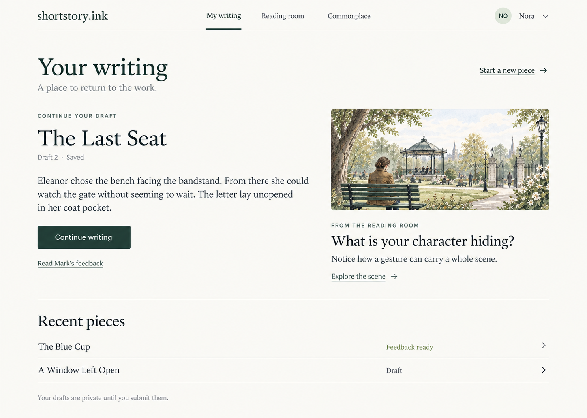
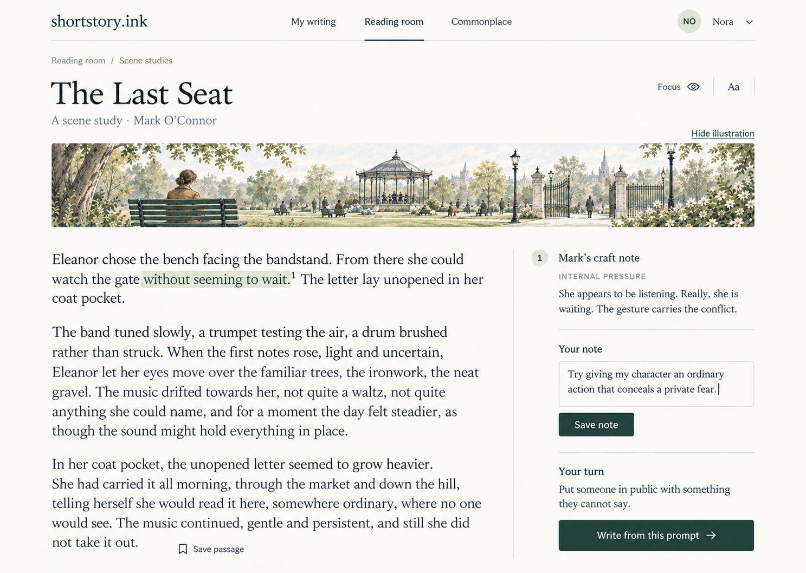
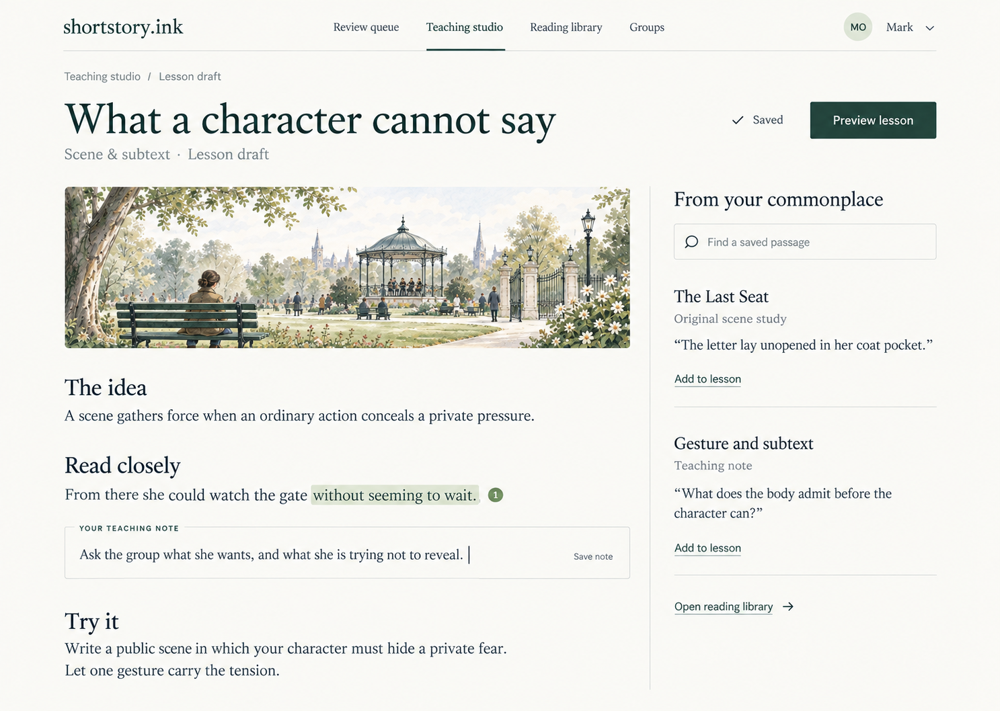

One shared design: the Literary Journal’s open pages and typography, with the Reading Garden’s illustrations used where they help a lesson. These are three areas of the same site, rather than competing options. View the original directions.
Combined direction · 1
A writer’s home
Resume a draft first; discover a reading or prompt alongside it.

Combined direction · 2
The reading room
Read, annotate and move from a craft observation into your own writing.

Combined direction · 3
Your teaching studio
Build a lesson from passages, teaching notes and exercises.
